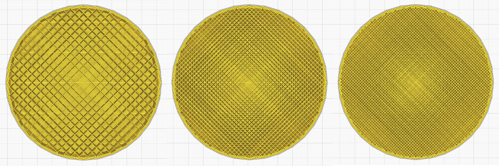
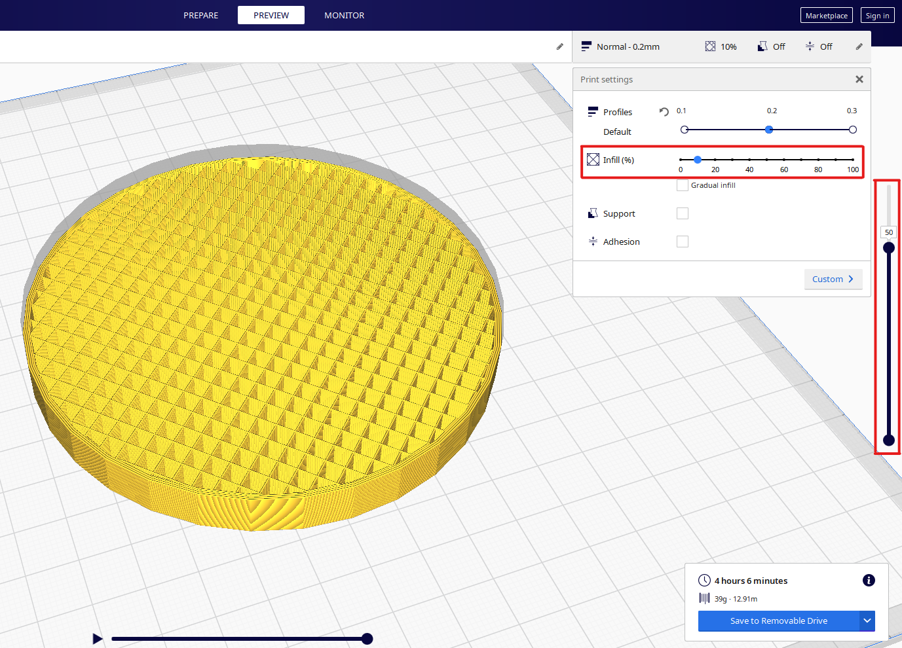

Saving time/material by
changing the infill settings
Cura Quick Tip
Per definition the infill describes the density of filament inside a
printed 3D-model. This means that a
model with 100% infill will
be completely solid, while a model with 0% infill will turn out to be
hollow.
The infill-density greatly influences the overall print
time and material usage, so it makes sense to optimize it.

Curas preview of a 10x10cm model with 10%/20%/30% infill.
The optimal density depends on the type of model you want to print. A
model which is designed to be
hollow (a vase for example) will
obvously be printed with 0% density. Apart from those types of
models
I found an infill-density of around 20% to be optimal if
the print will only be used for visual purpose. To
be more cost
efficient that value can be reduced to 15% or even 10% while still
being relatively sturdy.
If the print has a functional
purpose, like supporting weight, I would choose a density of at least
30%-50%,
but keep in mind, that a density above 70% won't
contribute much to the overall stability and will just
waste time
and filament.
In Cura you can change the infill-density
with a slider, which is located in the top right corner when
opening
the program.
After choosing your desired density and hitting the
'Slice'-button another slider appears on the far right,
with
which you can view the individual layers of your model and check if
you've chosen the right
infill-value. Both sliders are marked red
in the following picture for better understanding.
